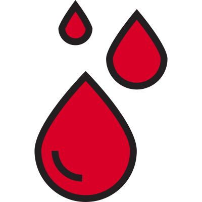

What is a period?
A short description
Periods occur when we experience changes in hormones in the our bodies. Our ovaries release hormones estrogen and progesterone that cause the lining of our uterus (womb) to build up. Our uterus builds up so that a fertilized egg can attach and start developing to have a baby. But if the egg is not fertilized, the lining will break down and bleed; this is what our period is!!
How long do periods last?
Periods stop once we reach menopause, which usually comes when we're around 45-55 years old. Periods also stop while we're pregnant.
Helpful resources
